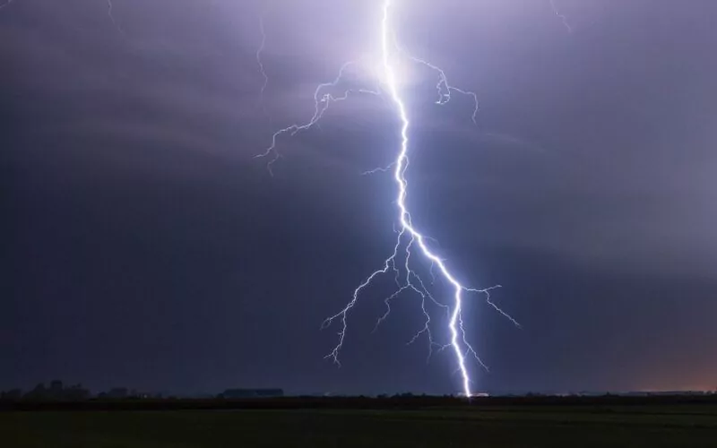

Mes Projets
Projet 1 : Détecteur de foudre
En 2024, j'ai eu la chance de participé à un projet scientifique et technique au sein de l'ESIEA,
lors de se projet de groupe, j'ai pu créer un détecteur de foudre pour appareil photo, pour pouvoir
prendre en photo la foudre. Ce détecteur fonctionnait à l'aide d'une carte arduino et d'un système électronique.

Projet 2
Description du projet...